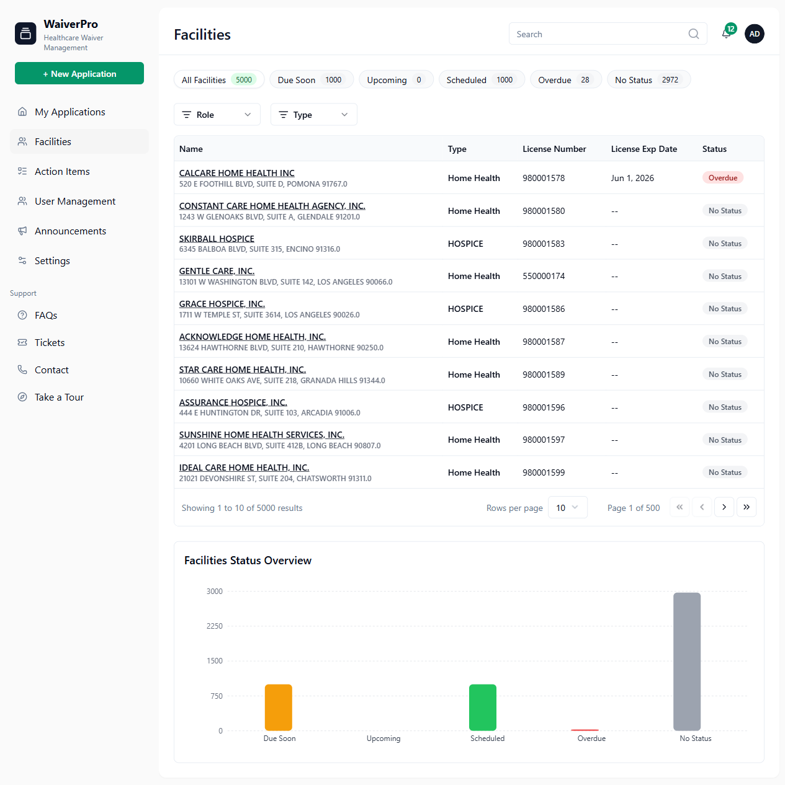

Generated: 28 June 2026 13:34
Facilities

| Component | Expected | Actual | Severity | Confidence |
|---|---|---|---|---|
| URL /dashboard/facilities | URL /dashboard/facilities | Not Found | Medium | 90% |
| The Facilities page lists the facilities in your organisation and tracks the status of their waiver | The Facilities page lists the facilities in your organisation and tracks the status of their waiver | Not Found | Medium | 90% |
| applications. | applications. | Not Found | Medium | 90% |
| Filters | Filters | Not Found | Medium | 90% |
| A row of status chips filters by application due-date status: All Facilities, Due Soon, Upcoming, | A row of status chips filters by application due-date status: All Facilities, Due Soon, Upcoming, | Not Found | Medium | 90% |
| Scheduled, Overdue, and No Status. You can further filter by Role and Type, or search by | Scheduled, Overdue, and No Status. You can further filter by Role and Type, or search by | Not Found | Medium | 90% |
| NOTE | NOTE | Not Found | Medium | 90% |
| The status chips and the Status / License Exp Date columns are part of the Facilities Status | The status chips and the Status / License Exp Date columns are part of the Facilities Status | Not Found | Medium | 90% |
| Tracking feature, which can be turned on or off under Settings → Features. | Tracking feature, which can be turned on or off under Settings → Features. | Not Found | Medium | 90% |
| The facilities table | The facilities table | Not Found | Medium | 90% |
| Facilities are listed with the columns Name, Type, License Number, License Exp Date, and | Facilities are listed with the columns Name, Type, License Number, License Exp Date, and | Not Found | Medium | 90% |
| Status. Below the table, the Facilities Status Overview summarises the portfolio. Use the paging | Status. Below the table, the Facilities Status Overview summarises the portfolio. Use the paging | Not Found | Medium | 90% |
| controls to move through results. | controls to move through results. | Not Found | Medium | 90% |
| Filter | Filter | Not Found | Medium | 90% |
| are part of the Facilities Status | are part of the Facilities Status | Not Found | Medium | 90% |
Compliance generated using deterministic fuzzy matching because the AI response was invalid.
| Component | Matched | Expected | Coverage |
|---|---|---|---|
| Buttons | 0 | 2 | 0% |
| Forms | 1 | 4 | 25% |
| Headings | 0 | 0 | 100% |
| Table_Headers | 0 | 1 | 0% |
| Cards | 0 | 0 | 100% |
| Badges | 0 | 0 | 100% |
| Tabs | 0 | 0 | 100% |
| Component | Expected | Actual | Severity | Confidence |
|---|---|---|---|---|
| URL /dashboard/facilities | URL /dashboard/facilities | Not Found | Medium | 90% |
| The Facilities page lists the facilities in your organisation and tracks the status of their waiver | The Facilities page lists the facilities in your organisation and tracks the status of their waiver | Not Found | Medium | 90% |
| applications. | applications. | Not Found | Medium | 90% |
| Filters | Filters | Not Found | Medium | 90% |
| A row of status chips filters by application due-date status: All Facilities, Due Soon, Upcoming, | A row of status chips filters by application due-date status: All Facilities, Due Soon, Upcoming, | Not Found | Medium | 90% |
| Scheduled, Overdue, and No Status. You can further filter by Role and Type, or search by | Scheduled, Overdue, and No Status. You can further filter by Role and Type, or search by | Not Found | Medium | 90% |
| NOTE | NOTE | Not Found | Medium | 90% |
| The status chips and the Status / License Exp Date columns are part of the Facilities Status | The status chips and the Status / License Exp Date columns are part of the Facilities Status | Not Found | Medium | 90% |
| Tracking feature, which can be turned on or off under Settings → Features. | Tracking feature, which can be turned on or off under Settings → Features. | Not Found | Medium | 90% |
| The facilities table | The facilities table | Not Found | Medium | 90% |
| Facilities are listed with the columns Name, Type, License Number, License Exp Date, and | Facilities are listed with the columns Name, Type, License Number, License Exp Date, and | Not Found | Medium | 90% |
| Status. Below the table, the Facilities Status Overview summarises the portfolio. Use the paging | Status. Below the table, the Facilities Status Overview summarises the portfolio. Use the paging | Not Found | Medium | 90% |
| controls to move through results. | controls to move through results. | Not Found | Medium | 90% |
| Filter | Filter | Not Found | Medium | 90% |
| are part of the Facilities Status | are part of the Facilities Status | Not Found | Medium | 90% |
Screenshot support will be added in the next milestone.